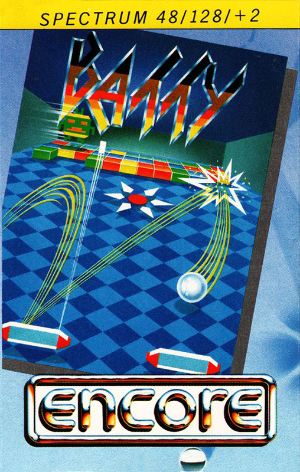
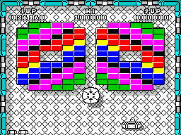

Batty


{kind=link}

| Publisher: | Hit Pak |
| Price: | £9.95, Compilation |
| Year: | 1987 |
| Source: | CRASH, Issue 44 |
Batty, a small horizontally-moving bat, exists in a world of rectangular blocks. These blocks are arranged in different configurations at the top of the screen, and he/she/it fires a small ball at them: it then rebounds according to the pattern and consistency of the blocks.

Batty must try to stop the ball bouncing oft the bottom edge of the screen, by obstructing its path. If Batty is not sufficiently quick or accurate, the ball disappears and the flattened batsman loses one of 'his/her/its three lives.
The multicoloured bricks have different characteristics, Some are easily destroyed by a single contact with the ball, others require several hits, and some are indestructible. For every block wiped Out, Batty receives points.
Some blocks, when destroyed. drop things down toward Batty. By moving to gather these, Batty can gain extra points and lives, elongate him/her/itself, increase the destructive power of the ball, slow its speed, split it into three. or obtain a laser that quickly destroys blocks. Yet another feature allows Batty to capture the ball and carefully consider his/her/its angle of fire. And all these features add points to Batty's score.
When all the destructible blocks on a screen have been removed, the next of the 14 levels is reached. But catching a jet pack gives Batty quicker progress - it automatically takes him/her/it to the next level.
Batty can possess only one supplementary feature at a time, and on collecting a new one loses the last (except when the ball has been split into three, in which case another feature can be added).
To create difficulties for Batty, magnets contained within some block patterns alter the predictable movement of the ball, and bomb-dropping aliens patrol the upper reaches of the screen. These alien swarms grow at higher levels, and progress further and further down the screen; their bombs kill Batty.
Batty can destroy the aliens by touch, by firing the ball at them, or by picking up the 'kill aliens' add-on. It's a bat's life.
CRITICISM
'Nick: Batty is one of the most unoriginal games I've ever played - Sinclair gave one like this (Through The Wall) away with the first Spectrums, and of course there's Arkanoid with almost identical graphics. There are some neat touches in Batty, though, and the graphics make it better than Arkanoid.' 74%
COMMENTS
| Joystick: | Kempston, Sinclair |
| Graphics: | Excellent, with lots of colour |
| Sound: | Limited, even on the 128 |
| General rating: | The best Breakout clone we've seen so far |
| Presentation: | 77% |
| Graphics: | 77% |
| Playability: | 87% |
| Addictive qualities: | 85% |
| Overall: | 85% |